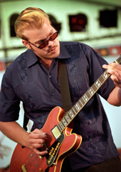
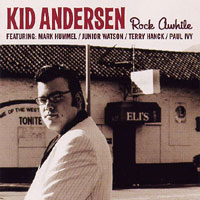
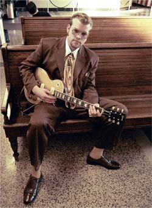

пресс-релиз blues.ruChris "Kid" Andersen родился в Норвегии в семье больших любителей музыки и с детства начал учиться играть на гитаре. Отец возил его на частные уроки за много километров по нескольку раз в неделю, позже Кид получил академическое образование по классу джазовой гитары. В 16 он перебрался в столицу Осло, где быстро стал важным членом хаус-бенда главного блюзового клуба Мадди Уотерз, и за несколько лет имел возможность поиграть со многими американскими блюзовыми звездами.
Таланты и серьезное увлечение музыкой сподвигли Кида на то, чтобы в возрасте 21 года переселиться в Калифорнию, где обстановка благоприятствовала его росту в качестве блюзового музыканта. Подтолкнул его к этому шагу известный саксофонист Терри Хэнк, с которым Кид после гастролировал в течении нескольких лет по всей Америке. Довольно быстро Кид влился и стал признанным и полноправным участником калифонийской блюзовой тусовки. За несколько лет он переиграл со многими десятками ныне здравствующих блюзовых звезд.
Первая пластинка Rock Awhile продемонстрировала разносторонность музыкального стиля Кида Андерсена. Там есть и выдержанные в духе Отиса Раша и Питера Грина мощные блюзы, чикагские традиционные, вест-коаст инструменталы и даже элементы серфа. Пластинка явно выделяется современной эклектичной беспринципностью, но замешанной на серьезной блюзовой основе. Гиганты вест-коаст блюза гитарист Джуниор Ватсон и гармонист Марк Хаммил поучаствовали в записи, добавив ей еще больше колорита.
Следующую пластинку с названием Guitarmageddon Кид сообразил на троих вместе с сумашедшими гениальными гитаристами Джуниором Ватсоном и норвежским Видаром Бюском. Задумка состояла в том, чтобы по-хулигански исследовать передовой блюзовый гитарный опыт. Пластинка с тремя гитаристами тщательно аранжирована, без намека на перегруз утомительными соло, наоборот, очень лаконичная по форме и короткая по длительности. Три совсем разных гитариста показывают каждый свой стиль, при полном взаимопонимании, развивая музыкальные идеи друг друга.
Последний год Кид Андресен гастролирует в качестве постоянного гитариста в группе классика блюзовой гармоники Чарли Масселвайта. Они записали вместе последний альбом Масселвайта "Delta Hardware", разумеется, привлекший большое внимание всех блюзовых критиков, которые не смогли не отметить ярко выделяющуюся на пластинке патриарха буйную гитару Кида. Одновременно Кид Андерсен продолжал работать на своим материалом. Только что в США и Норвегии вышла его третья пластинка Greaseland, в поддержку которой Кид отправился домой с трехнедельным туром, который продолжится неделей в России.
Свое прозвище Кид ("Малыш") получил за свой 2-х метровый рост и взрослый с детства низкий хриплый голос. При этом он всегда бодр и готов к музыкальным приключениям. В его стиле отмечают наличие редкой блюзовой мощи, когда он выжимает из гитары то грубые, то плачущие звуки. Одновременно он быстр и изящен в облегченном вест-коаст стиле, а также образованно-разнообразен в джазовых вещах посложнее.
В Россию с Кидом приедет Ричард Гьемс (Richard Gjems) - один из трех главных гармонистов в Норвегии. На басу Джонни Огланд (Johnny Augland) - супер-музыкант сверх-человек, который отлично играет почти на всех блюзовых инструментах. В конце прошлого года он записал драйвовую пластинку My Kind Of Blues, на которой сыграл на басу, ударных, гитаре, клавишах и спел. Джонни Огланд был клавишником и вторым гитаристом в группе Видара Бюска в период блюзового расцвета, ему также принадлежат наиболее сложные аранжировки на первых пластинках Бюска. На барабанах сыграет ветеран Пер Фредриксен, постоянно выступающий с норвежской группой Good Time Charlie.
На концертах нас ожидает волнующее, местами - искрометное шоу с энергией настоящего блюзмена, выраженной не только в децибеллах. С современным стилистическим разнообразием, которое не позволит заскучать ни на секунду даже тем, кто не считает себя блюзовым фанатиком.

С выходом в свет дебютного альбома "Rock Awhile", Крис "Кид" Андерсен (Chris "Kid" Andersen) буквально ворвался на американскую блюзовую сцену с мощью и уверенностью признанной звезды. Несмотря на то, что ему едва за двадцать, его владение блюзовой формой не поддается объяснению ни с позиций здравого смысла, ни географии.
Андерсен безоговорочно заявляет: "Это блюзовая запись. Я не пытался выдержать ее в одном определенном стиле блюза, но блюз - ее общий знаменатель". Все богатство жанра продемонстрировано на записи с безжалостностью земного притяжения. Искушенные слушатели услышат понемногу от джампа, чикагского блюза, электрического блюза, и даже мелодии, навеянные "дикими 60-ми" и эрой психоделии. "Кид" обладает огромными музыкальными способностями, а его техника владения гитарой бросает вызов традиции. Никогда не потворствуя своим желаниям и всегда играя комфортно и свободно, Крис быстро добирается до кульминации в песне со степенной величавостью и блюзовым неистовством.
Его страсть к блюзу родилась, когда его хиповый сосед Мортен Омлид (Morten Omlid) из невероятно маленького норвежского городка Херр в Телемарке познакомил его с ранним американским рок-н-роллом и ритм-н-блюзом 50-х. Местные музыкальные магазины, где у посетителей была возможность прослушивать виниловые пластинки, в дальнейшем подпитывали его неумеренный аппетит к американской музыке.
Андерсен начал петь и играть в 11 лет. Он брал уроки гитары у норвежского любителя блюза по имени Норман Омлид (Norman Omlid), а позднее стал изучать джазовую гитару. К счастью для всех нас, родители Андерсена всегда его здорово поддерживали, а отец регулярно возил его на уроки гитары (трехчасовая поездка в оба конца) каждую неделю в течение нескольких лет. Ну разве это не любовь?
Став совершеннолетним, "Кид" перебрался в Осло, в самый крупный город страны, где быстро завоевал себе ведущие позиции на сцене. Андерсен был видным участником хаус-бэнда в клубе "Muddy Waters Blues Club" в Осло на протяжении нескольких лет. Он аккомпанировал приезжим американским исполнителям, таким как Нэппи Браун (Nappy Brown), Хоумсик Джеймс (Homesick James), Уилли «Биг Айз» Смит (Willie "Big Eyes" Smith) и Джимми Докинс (Jimmy Dawkins).
Кто оказал на «Кида» влияние:? Многие. Он быстро признает, что учился на пластинках Би Би Кинга (B.B. King), Отиса Раша (Otis Rush), Ти Боун Уокера (T-Bone Walker), Билла Дженингса (Bill Jennings), Бадди Гая (Buddy Guy), Оскара Мура (Oscar Moore), Фредди Кинга (Freddie King), Уилли Джонсона (Willie Johnson) и Джимми Докинса (Jimmy Dawkins), а также Чака Берри (Chuck Berry). Временами его игра напоминает еще одного, сильно повлиявшего на него музыканта, британского блюз/поп гитариста Питера Грина (Peter Greeen).
Со времени приезда в штаты три года под патронажем своего сценического и бизнес-директора, музыканта Терри Хэнка (Terry Hanck), композиторские, вокальные, а также феноменальные гитарные способности "Кида" уверенно прогрессируют. Должно быть, мечта этого доброго великана сбылась - два кумира Андерсена, Марк Хамелл (Mark Hummel) и Джунор Уотсон (Junior Watson) приняли участие в записи его мощного дебютного альбома.
"Кид" пребывает в полной боевой готовности к музыкальной атаке. Если в мире существует справедливость, этот норвежский подарок музыке и блюзу получит признание, и на радость нам Кид будет играть на все более и более крупных площадках долгие годы. К радости своих поклонников, число которых все время растет, Андерсен считает, что "это - альбом, который я хотел сделать, потому как это та самая дурь, которую мне нравится играть и слушать". Еще до того, как альбом состоящий из 14-ти треков будет прослушан до конца, благодарные слушатели почувствуют то же самое.
Джозеф Джордан (Joseph Jordan)
National Editor - Southland Blues
West Coast Blues Hall of Fame's Blues Writer of the Year for 2003

Интернет портал blues.ru совместно с norge.ru при поддержке Посольства Норвегии продолжает знакомить российского слушателя с лучшими блюзовыми музыкантами из Норвегии - страны, где на 5 миллионов населения приходится 90 блюзовых клубов и 22 ежегодных фестиваля. В этом блюзовом раю вырастают потрясающие молодые музыканты, которые с детства отдают руку и сердце блюзу. За последние 2 года в России уже играли лучшие из них. Видар Бюск (Vidar Busk), Амунд Морюд (Amund Maarud) и Эйрик Бергене (Eirik Bergene) буквально потрясли наших меломанов драйвом, своим чувством и знанием блюза во всех его разнообразных формах.Молодой гитарист Крис Андерсен по кличке «Кид» (дитя) - это новая блюзовая сенсация в Норвегии. Занимаясь блюзовой гитарой и вокалом с 11-лет, Кид, будучи еще тинейджером, регулярно играл в клубе Мадди Уотерз в Осло - главной блюзовой точке Норвегии. Позже он покинул свою родину на несколько лет ради родины блюза - Америки. Уже более трех лет Кид колесит по США в группе вместе с известным саксофонистом Терри Хэнком, затачивая свое блюзовое мастерство в боевых условиях. Главным плодом его творчества стал вышедший в конце 2003 года дебютный альбом "Rock Awhile", на котором вместе с Кидом сыграли его кумиры - Джуниор Уотсон (Junior Watson) и Mark Hummel (Марк Хаммил). Пластинка произвела очень сильное впечатление на критиков как в США, так и на родине Кида в Норвегии, ибо на ней Кид Андерсен продемонстировал свое взрослое понимание традиционного старого блюза, владение разными стилями от Чикаго до Вест Коаст Блюза, гитарное мастерство, чувство стиля и талант автора песен. О Киде и его пластинке заговорили в Осло, а журнал Blues News посвятил ему свой последний номер. Уже будучи признанным после трехлетнего перерыва Кид на белом коне в первый раз вернулся домой с гастролями. В 2004 в Норвегию с ним дважды приезжал гитарист Джон Ли Хукер младший - сын легендарного блюзмена из Чикаго.
Вместе с Кидом Андерсеном в Россию едет группа - блюзовая сборная клуба Мадди Уотерз и Норвегии в целом. Сложилось так, что двое ее участников уже знакомы нашим слушателям.
Это Билл Трояни (Bill Troiani) - 50-летний американский бас-гитарист, который играл всю жизнь у себя на родине с известными музыкантами (Эдди Киркланд, Попа Чабби, Том Рассел), а несколько лет назад перебрался жить в Норвегию, где с не меньшим удовольствием играет с молодыми энтузиастами, выступая также с гастролирующими в Норвегии блюзменами из США. В прошлом году Билл приезжал в Москву в составе Amund Maarud Band.
20-летний барабанщик Александр Петтерсен (Alexander Pettersen) - участник разных хоум-бендов клуба Мадди Уотерз, включая Billy T Band и группу Эйрика Бергене, с которым выступал в Москве в феврале 2004 года.
Гитарист Бьорн Видар Солли (Bjorn Vidar Solli) - друг детства Кида, однако в отличие от него избрал для себя джазовую гитару и добился больших успехов. В 22 года он получил престижную премию «Молодой джазмен года» Норвежского Джазового Форума. Помимо джаза Бьорн является замечательным блюзовым гитаристом и вокалистом.
Гастроли группы Кида Андерсена пройдут в России 2-6 июня 2004 года, в программе визита концерты не только в Москве, но и во Владимире, Ярославле и Нижнем Новгороде. Кид потрясет стены клубов своей убойной гитарой. Не пропустите живой блюз в одном из самых ярких своих проявлений!
Сайт Кида Андерсена в сети - www.kidandersen.com
Контактная информация:
Федор Романенко, fedor@blues.ru, тел (7 095) 790-0984
http://www.blues.ru (Блюз в России)
СР, 02.06.04, Москва, клуб Форте
ЧТ, 03.06.04, Москва, Ритм-н-блюз Кафе
ПТ, 04.06.04, Нижний Новгород, акад. театр драмы им.Горького
СБ, 05.06.04, Ярославль, клуб Партизан
ВС, 06.06.04, Владимир, Z-Club